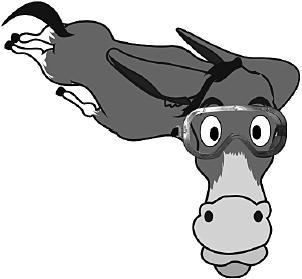
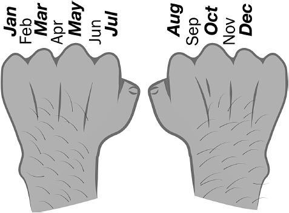
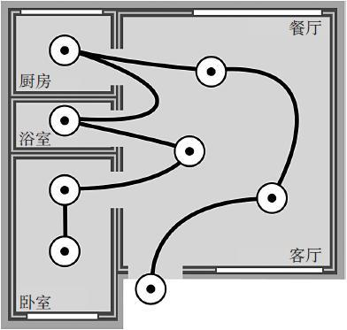
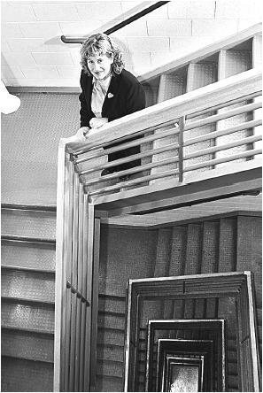

第10章 增强你的记忆力
大脑虽小，空间无限
约书亚·福尔是个普通人。但有时候普通人也能做出不普通的事。
刚大学毕业的福尔（Foer的发音同“four”），在和父母同住的日子里，他努力想成为一名成功的记者。可他的记性不太好，经常会忘记女友生日这类重要的日子，要么就是想不起自己把车钥匙放哪了，或是忘记烤箱里的食物。在工作上，无论他多努力地不出岔子，还是会把its写成it’s。
但是福尔惊讶地发现有些人不同寻常。他们能在短短的30秒内记住洗乱的纸牌顺序，或者毫不费力地记住几十样东西，像手机号码、名字、相貌、重要的事件或者日期。随便给他们一首诗，他们就能在几分钟内记住并且背给你听。
福尔特别羡慕。他觉得这些天才记忆大师的大脑，一定有些不寻常的构造，能帮助他们轻松记住海量数据。
记者约书亚·福尔为全美记忆冠军赛做准备。干扰是记忆强手最大的敌人，戴上耳塞和眼罩能让福尔避开干扰。强烈建议，如果真想记住什么，最好“两耳不闻窗外事”。
但是与福尔交谈过的每位记忆高手都坚称，在未经训练前，自己的记忆力水平相当一般。尽管看起来不可信，但这些人声称，老套的形象记忆法能让他们记得更快更轻松。“每个人都能做得到”，这样的声音在福尔耳边回响。你也可以。[1]
福尔怎么也不会想到，在这样的激励下，自己能够作为顶级决赛选手出现在美国冠军记忆联赛上，而此时的他正目不转睛地盯着一副纸牌。
作为教育者，我们热衷于鼓励学生构建知识组块，而不是仅去记忆孤立的概念。这有时会让他们产生错觉，以为背和记没那么重要。（“为何我要去死记硬背那些能在书上找到的方程式？”）但因为有了重点概念，充满创造力的组块过程才能开花结果，所以记住重点非常重要。从中可得到的重要经验，是要不断揣摩推敲记住的知识，才能构建组块。
——弗里斯特·纽曼（Forrest Newman）
萨克拉门托城市学院天文学物理学教授
还记得餐桌在哪儿吗？你自带的超大视觉空间记忆
别吃惊，其实你也有出色的视觉和空间记忆系统。有些学习技巧需要这些系统的支持，一旦运用起来，你便不必仅仅靠草率的重复强记知识。相反，你会通过一种充满趣味、便于记忆、富有创造性的方法，让视觉、听觉、触觉更易于接受你想要记住的内容。不仅如此，这些技巧还可以释放出工作记忆的空间。有时以古怪又不失逻辑的方式将事情分类记忆，更能轻松地强化长期记忆。这能有效地缓解考试时的紧张情绪。
下面要讲讲我所说的，属于你的出色视觉和空间记忆。如果让你观察一所从未参观过的房子，你会很快对大致的家具摆放、房间布局、配色方案，（哇！）甚至对浴室橱柜里的备用药物都会有一个印象。短短几分钟，你的大脑就会获取并保留上千条新信息，甚至几个星期之后，你脑海中留存的记忆量，仍旧是同时间内盯一面白墙所不能比的。你的大脑生来就能留存地点这样的大体信息。
不论古今，高手都用过这些记忆手段，这让他们充分开发了自己与生俱来的特大视觉空间记忆能力。我们的祖先从没有记忆大量人名或数字的需要，但他们确实得记住怎么在猎鹿3天后找到回家的路，记住营地南边的岩石陡坡上哪里能收获成熟饱满的蓝莓。出于进化需要，这种“记住物体位置和样貌”的高级能力就固化在了记忆系统之中。
助记的视觉图像

刚刚开始发掘视觉记忆系统时，可以试着创造一种便于记忆的视觉图像来代替你想要记住的关键条目。[2]例如，你可以用这张图记住牛顿第二定律：F=ma。（人类才经历了几十万年的成长，就得到了这种力与质量和加速度之间的基本关系。）公式里F代表飞翔（flying），m代表骡子（mule），至于a嘛，那就随你定了。
图像对记忆如此重要，部分原因在于图像与右脑的视觉中枢直接相连。[3]视觉区域有强化记忆的能力，图像让你充分利用这片区域，对看似乏味难记的概念进行压缩简化。

一个颇有创意的记忆方法。用突出的指关节代表有31天的月份。一位微积分专业的在校生这样说过：“说来也奇怪，自从用了这个简单的记忆法之后，我再也没有忘记过哪几个月有31天，这让我挺惊讶的。20年来，我躲着不学的东西结果10秒钟就学会了，不学是因为之前我觉得重复记忆太乏味，自己会坐不住。”
通过激发感官建立起越多的神经联结，就越容易回想起概念和意义。除了看到这头骡子之外，你还可以闻到它，感受到它飞翔中受到的风力。你甚至能听见耳边有风声簌簌而过。画面越滑稽越容易唤起记忆，效果就越好。
记忆宫殿法
记忆宫殿法需要你回想一个你熟悉的空间，比如自己家的布局，然后把它当成视觉形象的记事本，用来存储你想要记住的概念形象。你要做的就是回想一个熟悉的空间：可以是你的家，可以是去学校的路，或是你最爱的餐馆。大功告成！眼睛一眨，这个空间就变成了你的记忆宫殿，用它就像用笔记本一样。
记忆宫殿法对记忆互无关联的物品很管用，比购物单上的物品（牛奶、面包、鸡蛋）。至于怎样使用这个技巧，你可以想象门前有一大瓶牛奶，面包掉在沙发上，破鸡蛋的蛋清从咖啡桌边一滴滴流下来。换句话说，你可以想象你正走过一个非常熟悉的地点，里面有你想要记住的东西。
假如你想记住矿物硬度，从1到10表示从软到硬［1.滑石（talc）；2.石膏（gypsum）；3.方解石（calcite）；4.萤石（fluorite）；5.磷灰石（apatite）；6.正长石（orthoclase）；7.石英（quartz）；8.黄玉（topaz）；9.刚玉（corundum）；10.金刚石（diamond）］。你可以编一个助记口诀，让句中每一个大写首字母代表一种矿物：terrible giants can find alligators or quaint trolls conveniently digestible.（硬度从低到高，意思是“可怕的巨人觉得短吻鳄和食人魔很好消化”。）问题是这句话仍然难记。但如果放到记忆宫殿里就简单了。你的屋子前门，有一个可怕（terrible—talc）的巨人（giant—gypsum），手里拿着一个罐头（can—calcite）。一走进去，你发现（find—fluorite）一条短吻鳄……明白了吧。如果你在学金融、经济、化学或者别的学科，方法也是一样。

走进你的记忆宫殿，放好便于你记忆的图像。如果要记故事的五要素或科学研究方法七步骤等一连串信息，这种方法的帮助可就大了。
初次尝试记忆宫殿法，会记得没那么快。在脑中构思出具体图像还是要费点劲的。但是你会逐渐熟能生巧。一项调查显示，会用记忆宫殿法的人，在想象中把物体放置在当地大学的各个角落，在心中把这过程“走”上一两遍，他就能记住含有四五十件物品的清单上95%以上的内容。[4]以这样的方式利用大脑，创造力加强了你的记忆，而同时形成的记忆挂钩又会带给你更多的创造力。记忆宫殿还会有弊端吗？（其实，或许还真有一个：由于这个方法关系到视觉系统，在开车或进行其他空间分析的任务时，最好不要用到它。[5]一旦分神会很危险。）
该你试试了！
使用记忆宫殿
解剖学顶级教授特雷西·马格兰（Tracey Magrann）将记忆宫殿法用于记忆由五层组织构成的表层皮肤。
表层皮肤分为五层。由内到外分别是基底层、棘细胞层、颗粒层、透明层和角质层。要记住最深一层，请想象你的地下室。它就是基底层，从地下室（最底层）到屋顶（最表层），你得沿着地下室楼梯往上走……要当心！楼梯上满是仙人掌刺（棘细胞层）。顺着楼梯走到厨房，你发现有人把砂糖撒了一地（颗粒层）。然后继续上楼，去楼顶前先停下来抹点防晒霜。透明层就像一层防晒霜，因为它能抵御紫外线，但防晒霜只涂在手掌和脚掌上，所以你只需要想象在这些地方抹上就行了。现在你要去楼顶享用一根玉米了（角质层）。
该怎样在学习中使用记忆宫殿法呢，你能想到吗？
那些巩固脑中概念的歌曲和记忆宫殿法有关，因为唱歌也会优先使用到右脑。很多小曲子能帮你记住二次方程的求根公式、几何中的体积公式，以及很多其他类型的方程。比如谷歌搜索关键词“二次方程”和“歌曲”就能找到，或者自己编一个。许多儿歌通过让孩子听歌曲并配合肢体动作，帮助孩子牢牢记住歌词（比如“小兔子乖乖”）。使用有意义的肢体动作、昂首阔步慢慢摇摆或者小步跳，都能为保存脑中的想法提供更多的记忆挂钩，因为动作对感官的刺激变成了记忆的一部分。
除了记方程、概念或是购物清单，这些方法对其他事物的记忆同样有效。当你意识到图像能帮你记住想讲的关键概念之后，就算是做演讲展示这种偶尔让人不知所措的经历，也可以变得轻松起来。你只需要把要表达的基本想法与便于记忆的图像联系起来。去看约书亚·福尔关于演示记忆宫殿法如何记住演讲词的大师级TED演讲吧。[6]如果你想看看如何直接利用这些方法记住公式，试试进SkillsToolbox.com这个网站去找一些表征数学符号的图像资料。[7]（比如除号“/”等同于小孩子的滑梯。）
记忆辅助——无论是助记图像、顺口溜，还是假想的“宫殿”，它们之所以会管用，是因为能在你要开小差时帮你集中注意力。就算起初你编造的字面含义十分可笑，但它们也能让你注意到意义对记忆的重要性。简言之，记忆法让你平时的学习更有意义、印象更深，也更有趣味。
唤醒记忆的曲调
在我高一的化学课上，老师教了阿伏伽德罗常数6.02214×1023，但没人能把它记住。于是我的一个同学把这个数唱成了一首小曲，调子是Golden Grahams的麦片广告曲（一首很老的歌了，叫“Oh，Them Golden Slippers”）。30年后的今天，虽然我已不再青春年少，可就因为这首歌，我仍然记得阿伏伽德罗常数是多少。
——马尔科姆·怀特豪斯（Malcolm·Whitehouse）
计算机工程学专业大四学生
顶级教授特雷西的记忆秘诀
来回踱步，甚至吃点提前准备的零食，都会对记忆有好处，因为脑力活动会消耗大量的能量。在学习中调动大脑的多个区域也很重要。我们通过大脑的视觉皮层、听觉皮层、感觉皮层和运动皮层，分别记忆我们所见、所听、拿起或移动过的东西。学习时运用到大脑中更多的区域，就能建造更强大的记忆模型，织一张更密的网，即使在考试压力下也不会轻易遗忘。比如，在解剖实验课上，学生应该做到，拿起解剖模型，闭上眼睛，用手摸着模型的结构，大声说出每一个部分的名称。这里用不到嗅觉和味觉……虽说物尽其用，但也有个限度！
——特雷西·马格瑞安（Tracey Magrann）
鞍峰学院生物科学教授
本章小结
·记忆宫殿法——将有助于记忆的形象嵌入你熟悉的场景中，让自己感受视觉记忆系统赋予的力量。
·学着以更加训练有素且别具创意的方式来使用记忆，会有助于集中注意力，就算为了增强记忆而创造出天马行空的关联也没关系。
·理解后再去记忆，你会对学习材料记忆犹新。随着思维宝库的不断强化，总有一天你会成为学习真正的主人。
驻足与回顾
合上书，转开视线，这一章主要讲了什么？明天早上，起床开始执行“一天计划”时，想想这些要点你还记得多少。
学习提升
1.描述一幅能帮你记住一个重要方程式的图像。
2.从任意一节课中挑出四个或更多的关键概念。说说该如何把这些概念编译为便于记忆的图像，在记忆宫殿中你又会将它们存放到何处。（为了你的老师着想，有些便于记忆的图像还是得要你好好检查一遍。一位风趣的演员曾这样说：“我不在乎它们（这里指脑中“图像”）会是什么，只要它们别到大街上撒野，小心吓坏我的马。”
3.用祖母也能听明白的话，解释记忆宫殿法。
空间认知能力也能后天习得：远见卓识的工程学教授雪莉·索尔比的故事

雪莉·索尔比是工程奖项得主，她的研究方向涵盖了设计可视化复杂行为的3D计算机图形。在这里她讲了自己的故事。[8]
许多人错误地相信空间智慧是先天固有的——这种能力你要么有，要么无。在这里我要强调下，这种看法是不对的。事实上，我自己就是活生生的反例，空间能力是可以后天习得的。我差点因为空间感太差，而离开自己选择的工程学专业，但是我坚持克服了这个弱点，提高了空间技能，顺利完成了学业。由于我当学生时受过空间技能的困扰，现在我致力于帮助学生提高这项能力。几乎我带过的所有学生，通过练习都提高了能力。
人类智慧的表现形式多种多样，从音乐到语言到数学以及其他。其中一种重要的形式就是空间思维。空间智慧较高的人，在物体旋转甚至切成两半后，也可以从不同有利角度，想象到物体的外观。有时候，空间智慧就是只靠一张地图找到路的能力。
空间思考能力在许多职业中都发挥着决定成败的重要作用，包括工程学、建筑学、计算机科学等。比如空中交通管制员，必须在特定时间想象多架飞机的飞行路线，保证路线不会交错。也可以想象，一位汽车修理师需要空间思考能力，才能把修好的零件装回发动机。最近的研究中，空间智慧已经和创造性、创新性联系到了一起。换句话说，你越擅长空间思考，你就越有创造性和创新性！
我们发现，一些学生的空间技能之所以很弱，在于他们童年经历中很可能缺少对这项能力的启蒙。经常拆东西又重新装好的孩子通常有很强的空间认知能力。一些热衷于某类体育活动的孩子也是如此，比如打篮球。选手们要想象把球从球场的任何地方投进篮筐。
但是，即使小时候没有这样的经历，现在开始也不迟。成年人也可以发展出很强的空间技能，只要有耐心且不断练习。
为此你可以做些什么？尝试准确地对一个物体进行素描，然后尝试从不同的角度素描；玩3D电脑游戏；复原3D拼图（不妨先从2D拼图开始！）；把GPS导航放在一边，试试用地图指路。最重要的是，别放弃，请你只管坚持下去！
[1] Eleanor Maguire和同事（2003）对例如世界记忆锦标赛等论坛中著名的记忆大师进行了研究。“运用神经心理学的方法，以及结构和功能上的脑成像，”他们发现记忆力超群不是因为特别聪明或是脑结构差异。相反，（他们）发现记性较好的人使用空间学习技巧，调动脑中海马体等区域，它们是记忆尤其是空间记忆的关键区域。Tony Buzan为普及记忆技巧的重要性做出巨大努力。他的书《运用完美记忆》（Use Your Perfect Memory）（Buzan，1991）中对于一些普及的技巧有更详细的介绍。
[2] Eleanor Maguire和同事（2003）注意到人们通常认为记忆技巧非常难以使用，但是，比如记忆宫殿技巧，对于记忆要紧事来说其实非常简单自然而且有效。
[3] Cai et al.2013；Foer 2011。Denise Cai的研究表明如果一个脑半球（一般是左脑半球）负责语言，那么另一个半球会相应负责空间视觉能力。换言之，一个半球专门负责某项功能，说明另一个半球会负责别的功能。
[4] Ross and Lawrence 1968.
[5] Baddeley et al.2009，pp.363-365.
[6] http://www.ted.com/talks/joshua_foer_feats_of_memory_anyone_can_do.html.
[7] http://www.skillstoolbox.com/career-and-education-skills/learning-skills/memory-skills/mnemonics/applications-of-mnemonic-systems/how-to-memorize-formulas/.
[8] 关于空间推理的重要性请参阅Kellet al.2013.